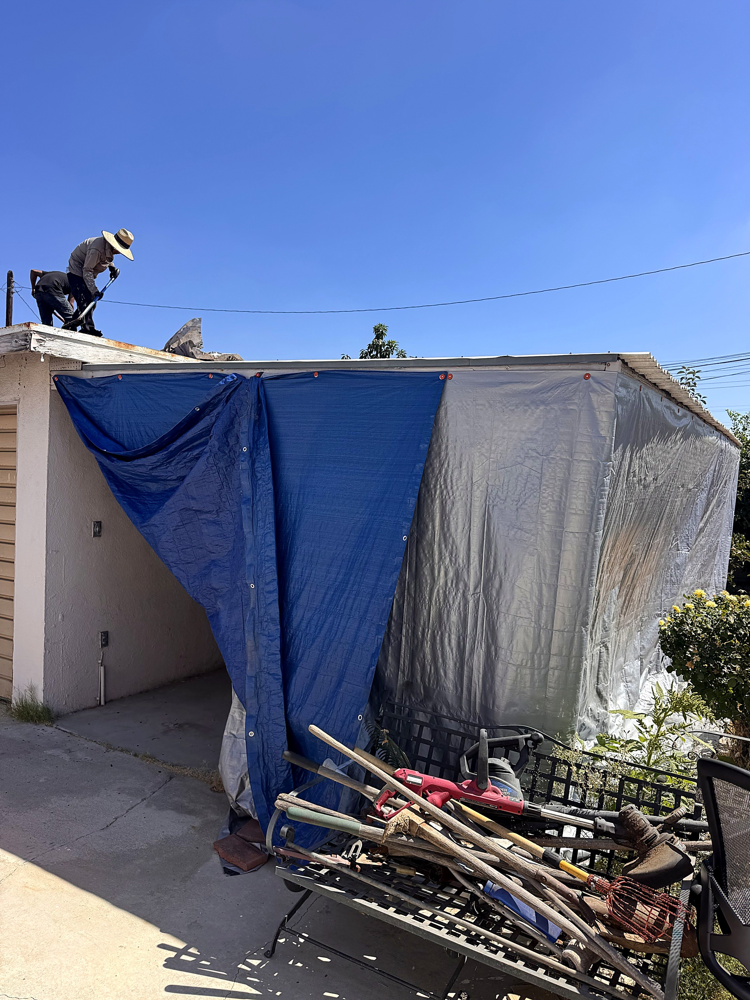
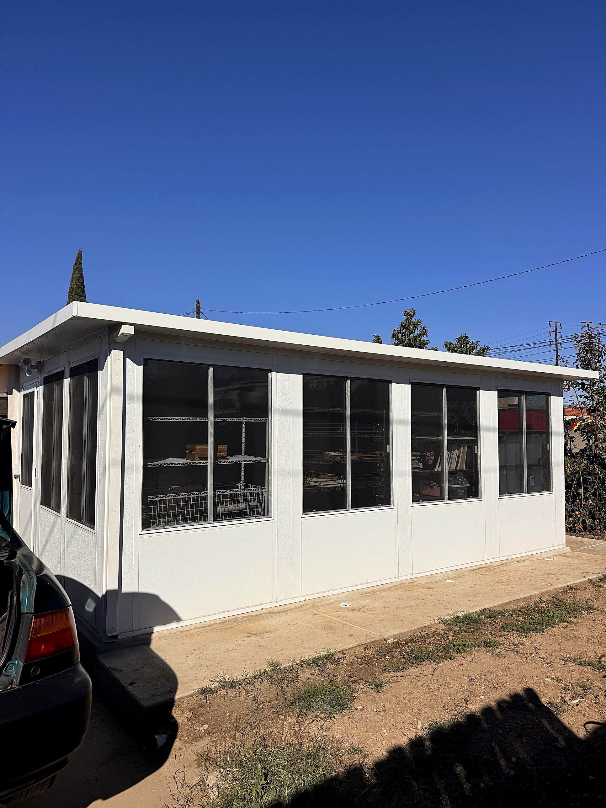
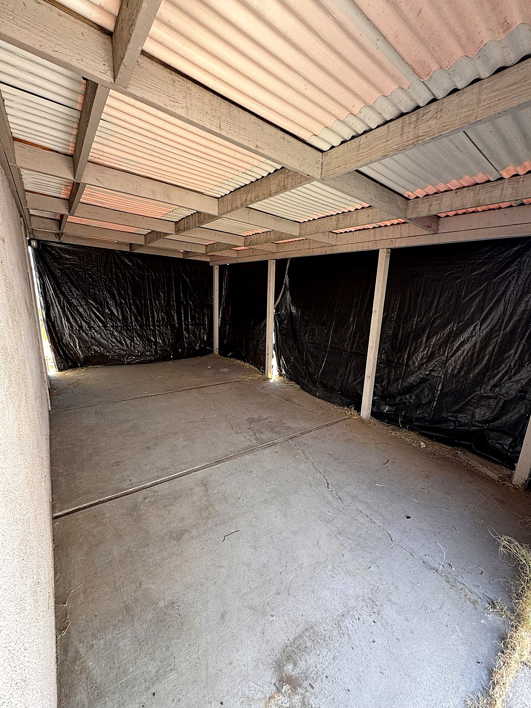
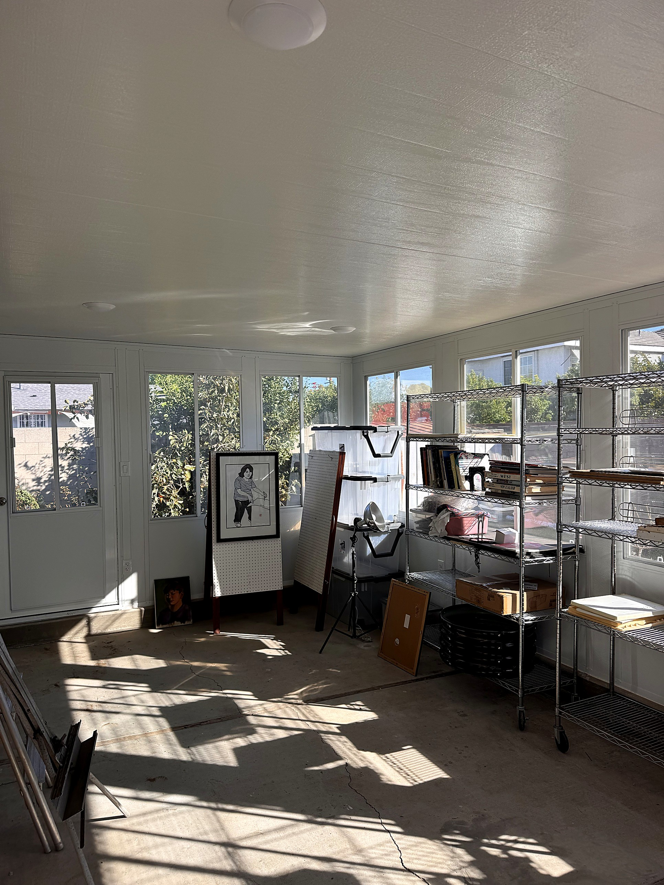
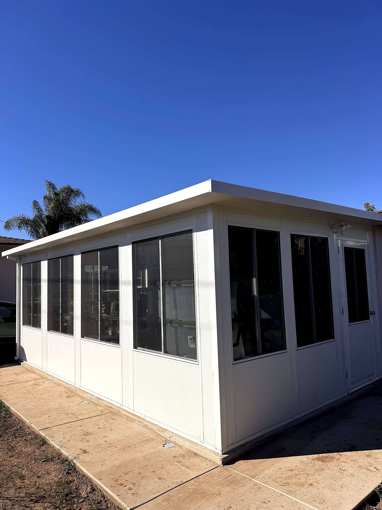
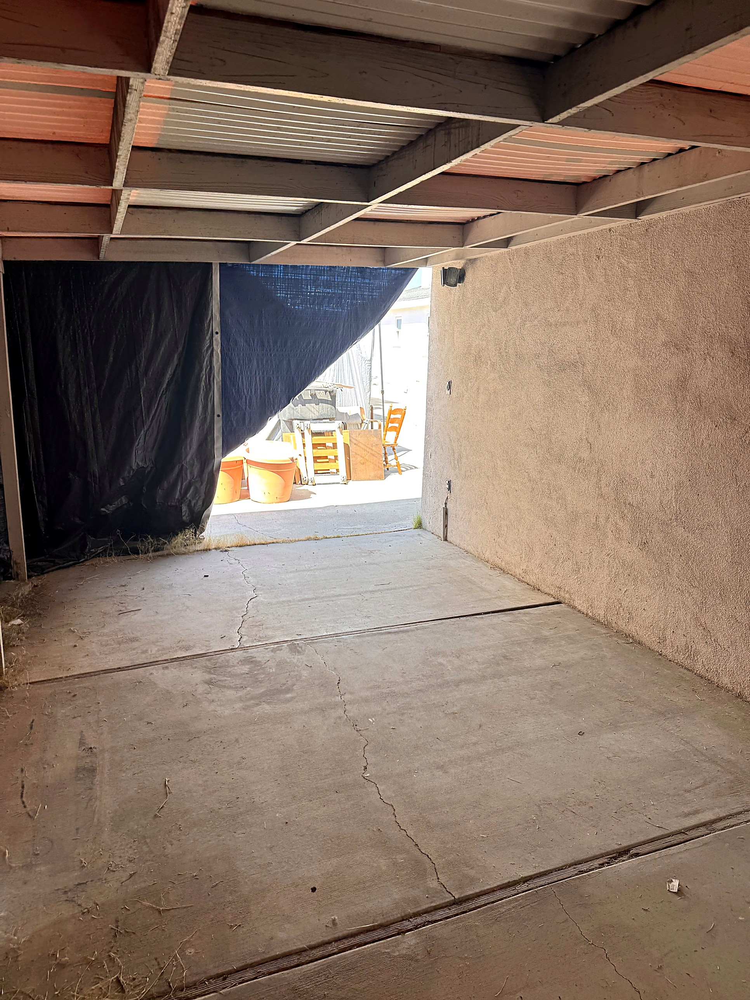
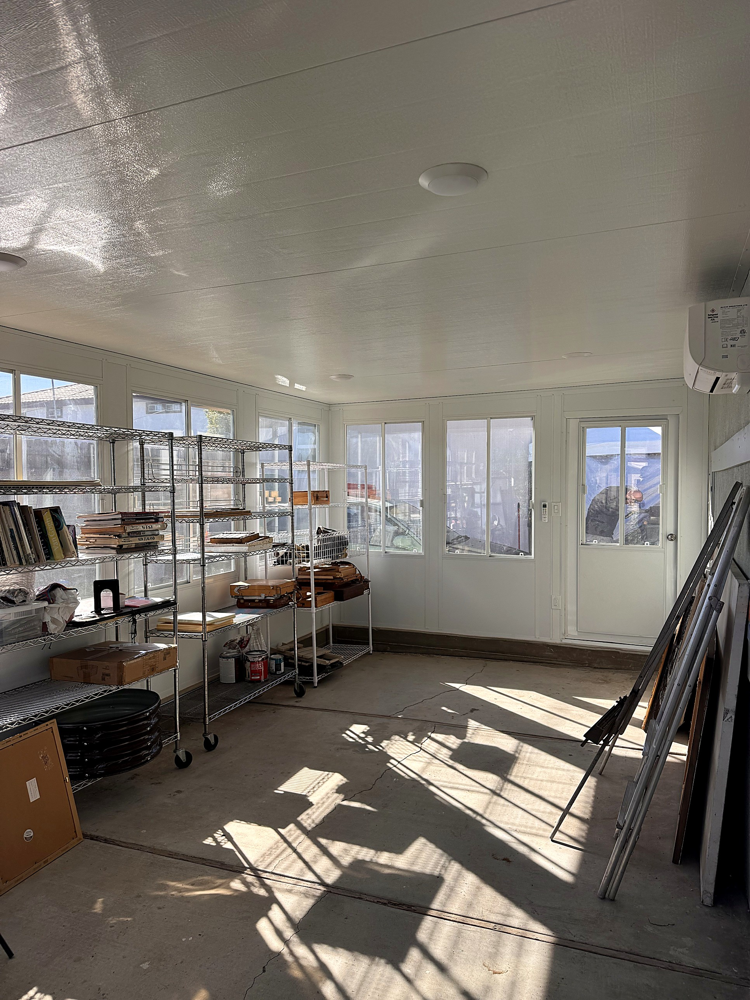

SAN GABRIEL, CA · BEFORE & AFTER
From tarps to a real room.
BEFORE
Tarps & a tired roof.
AFTER
A brand-new sunroom.
INSIDE, BEFORE
Plastic sheets for walls.
INSIDE, AFTER
Bright, sealed & finished.
Built to last.
Sliding windows all around
Ceiling lights & outlets
Built in San Gabriel, CA
THE OPEN END
Wide open to the driveway.
NOW
Windows & a real door.
Get your free sunroom estimate
805-889-0869
LIC. 971127